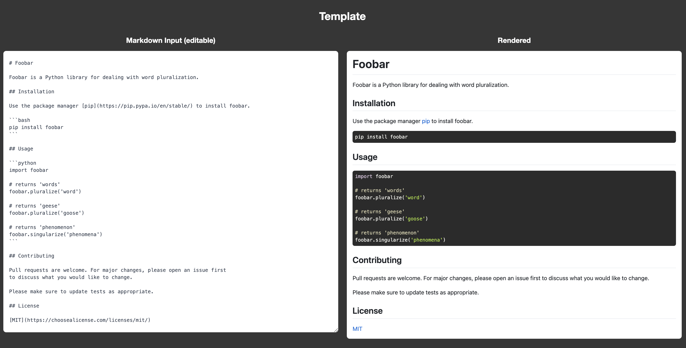
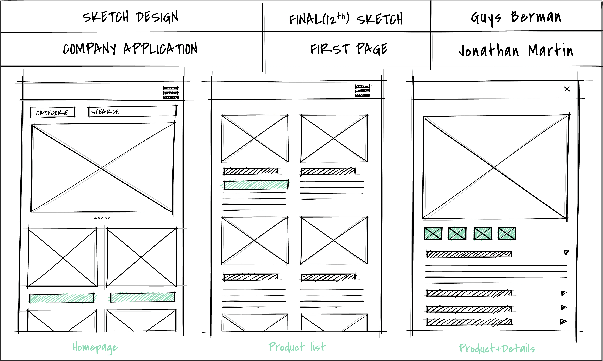

What is the purpose of a ReadMe file
A README file serves as your repository's welcome mat. It provides crucial information about the project's purpose,
functionality, and how to use it. Whether you're collaborating with a team or sharing your code with the world, having
clear and concise documentation in your README can save countless hours of confusion and frustration.
You can add a README file to a repository to communicate important information about your project. A README, along with
a repository license, citation file, contribution guidelines, and a code of conduct, communicates expectations for your
project and helps you manage contributions.
Read more

What is a Wireframe
Wireframes can help us create a solid foundation for the product design, but what do they look like? What should be
included?
A wireframe is a visual diagram that outlines the skeletal framework of a website, app, or other digital product.
Sometimes known as a page schematic or screen blueprint, it shows how elements relate to each other and how they’re
structured. By using a wireframe tool to build a blueprint, designers can create consistent layouts that meet user
needs.
Wireframing is a top-level process. User experience (UX) designers often use it to map out the design and layout of
their work without going into too much detail. It’s the first stage of the design process before it is fleshed out to
add more detail. As such, a wireframe primarily focuses on functionalities and intended behaviors, but not color schemes
or final stylistic choices.
A wireframe outlines the structure of your page or mobile app. It helps designers figure out where certain elements
should live and how the overall design will look.
Read more

What is Git Branches
Nearly every VCS has some form of branching support. Branching means you diverge from the main line of development and
continue to do work without messing with that main line. In many VCS tools, this is a somewhat expensive process, often
requiring you to create a new copy of your source code directory, which can take a long time for large projects.
Some people refer to Git’s branching model as its “killer feature,” and it certainly sets Git apart in the VCS
community. Why is it so special? The way Git branches is incredibly lightweight, making branching operations nearly
instantaneous, and switching back and forth between branches generally just as fast. Unlike many other VCSs, Git
encourages workflows that branch and merge often, even multiple times in a day. Understanding and mastering this feature
gives you a powerful and unique tool and can entirely change the way that you develop.
Read more